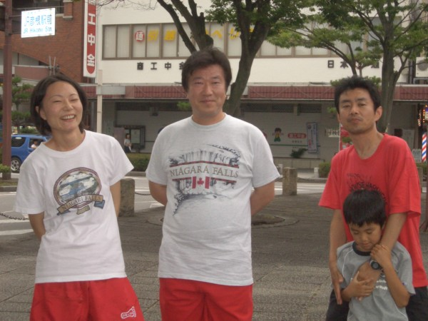

Run 233: 1st July 2007 at Hikone.
"Canada Day, Eh?!"
Hare: Al-kanida.
Nagoya H3 and KFMH3 hashers enjoy their first (or second? Or third?) post-trail beer.

Was it a long trail, a hot day, or both that knackered the pack?
Sasebo hasher Sir Trots A Lot steels himself for the long walk to the beer cooler while an NH3 hasher is happy she's back from that trip.
An NH3 hasher and Spooky say, "no hash paparazzi, please"!
An NH3 hasher, Spooky, and Daikon Do Me! prepare to jan-ken-pon for the last crisp.
Fish Food and Hot Tuna examine a small Sprat they found on trail.
Unusually, Chemical Smile loses a smiling contest, against an NH3 hasher.
Al-kanida goes ape at the thought of NO VAcation.

Kiss and Flasher wonder where their arms have gone while Hot Tuna stops the Sprat from nibbling on things.
Sexy Babe #1 assumes the position for one of Al-kanida's "special" down-downs.
Spooky sneezes, sending Urinator into an impromtue Superwoman-like flight.

NH3 hashers and Chemical Smile look on as somebody does something pretty spectacular. Or plain stupid, being a hasher.
Demon has that spell-casting glint in her eye; Al-kanida prepares his finger for her ear.